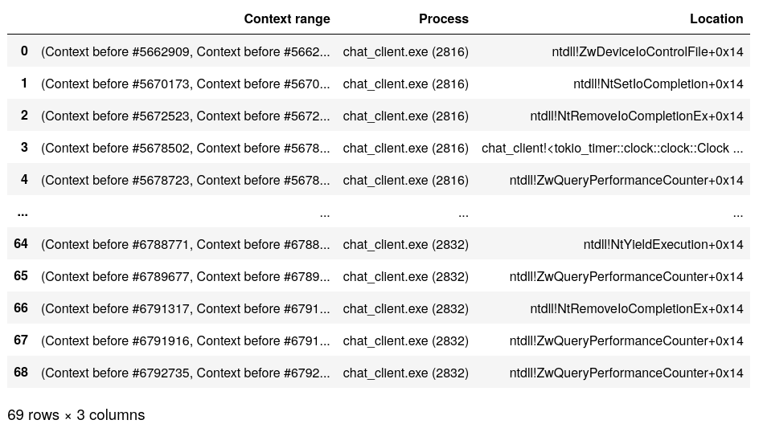
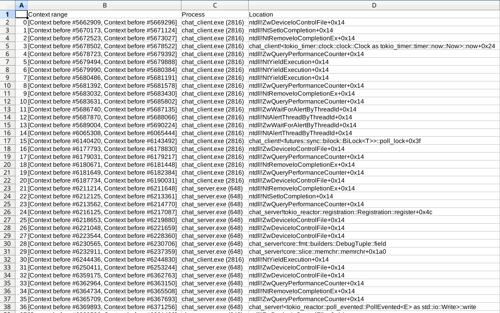

REVEN API Cookbook
Welcome to the REVEN API Cookbook.
This book is a collection of examples that demonstrate good practices to accomplish common tasks using the REVEN API.
Common abbreviations and variable names
REVEN scripts tend to re-use the same abbreviations and variable names for common objects.
| Abbreviation | Description |
|---|---|
server | A reven2.RevenServer instance representing a connection to a REVEN server |
pm | A reven2.preview.project_manager.ProjectManager instance representing a connection to the Project Manager |
trace | A reven2.trace.Trace instance, usually obtained from server.trace |
tr | A reven2.trace.Transition instance, usually obtained from trace.transition(tr_id) |
ctx | A reven2.trace.Context instance, usually obtained from e.g. trace.context_before(tr_id) |
Connecting to a server
From its host and port
# Connecting to a reven server
hostname = "localhost"
port = 13370
server = reven2.RevenServer(hostname, port)
From the scenario's name
You can use a feature of the Workflow API to get a connection to a server from the scenario's name, rather than by specifying a port.
From the CLI:
from reven2.preview.project_manager import ProjectManager
pm = ProjectManager("http://localhost:8880") # URL to the REVEN Project Manager
connection = pm.connect("cve-2016-7255") # No need to specify "13370"
server = connection.server
From a script:
with pm.connect("cve-2016-7255") as server:
# TODO: use the server
pass
This is useful, as the server port will typically change at each reopening of the scenario, while the scenario name remains the same.
If no server is open for that particular scenario when executing the ProjectManager.connect method call, then a new one will be started.
Manipulating transitions and contexts
Getting a transition or context from a transition id
tr = server.trace.transition(1234)
ctx_before = server.trace.context_before(1234)
ctx_after = server.trace.context_after(1234)
Context <-> Transition
Transition -> Context
ctx_before = tr.context_before()
ctx_after = tr.context_after()
Context -> Transition
if ctx != server.trace.first_context:
tr_before = ctx.transition_before()
if ctx != server.trace.last_context:
tr_after = ctx.transition_after()
if ctx != server.trace.context_before(0):
tr_before = ctx.transition_before()
if ctx != server.trace.context_after(server.trace.transition_count - 1):
tr_after = ctx.transition_after()
Getting the next/previous context and transition
next_tr = tr + 1
prev_tr = tr - 1
next_ctx = ctx + 1
prev_ctx = ctx - 1
next_next_tr = tr + 2
# ...
Iterating on a range of transitions/contexts
for tr in server.trace.transitions(0, 1000):
print(tr)
for ctx in server.trace.contexts():
print(ctx)
Getting the first/last context/transition in the trace
first_tr = server.trace.first_transition
last_tr = server.trace.last_transition
first_ctx = server.trace.first_context
last_ctx = server.trace.last_context
first_tr = server.trace.transition(0)
last_tr = server.trace.transition(server.trace.transition_count - 1)
first_ctx = server.trace.context_before(0)
last_ctx = server.trace.context_after(server.trace.transition_count - 1)
Reading values from registers or memory
Common imports for easy access
from reven2.address import LinearAddress, LogicalAddress, LogicalAddressSegmentIndex, PhysicalAddress
from reven2.arch import x64 as regs
from reven2.types import *
Getting the current ring
def current_ring(ctx):
return ctx.read(regs.cs) & 3
Reading as a type
Integer types
ctx.read(regs.rax, U8)
ctx.read(regs.rax, U16)
ctx.read(regs.rax, I16)
ctx.read(regs.rax, BigEndian(U16))
Sample output:
96
35680
-29856
24715
String
ctx.read(LogicalAddress(0xffffe00041cac2ea), CString(encoding=Encoding.Utf16,
max_character_count=1000))
Sample output:
u'Network Store Interface Service'
Array
ctx.read(LogicalAddress(0xffffe00041cac2ea), Array(U8, 4))
Sample output:
[78, 0, 101, 0]
Dereferencing pointers, reading the stack
Reading [rsp+0x20] manually:
addr = LogicalAddress(0x20) + ctx.read(regs.rsp, USize)
ctx.read(addr, U64)
Reading [rsp+0x20] using deref:
ctx.deref(regs.rsp, Pointer(U64, base_address=LogicalAddress(0x20)))
Sample output:
10738
Parsing a raw buffer as a type
U16.parse(b"\x10\x20")
BigEndian(U16).parse(b"\x10\x20")
Array(U8, 2).parse(b"\x10\x20")
Sample output:
8208
4128
[16, 32]
Moving to the beginning of a function
from reven2.trace import Transition
from typing import Tuple, Optional
def call_bounds(tr: Transition) -> Tuple[Optional[Transition], Optional[Transition]]:
"""
Given a transition anywhere inside of a function, this function returns
the transition at the beginning of the function call and the transition at
the end of the function call.
"""
return (tr.step_out(is_forward=False), tr.step_out(is_forward=True))
Searching for function calls
Looking for an exact symbol name
symbol_name = "CreateProcessW"
try:
symbol = next(server.ossi.symbols(f"^{symbol_name}$",
binary_hint='kernelbase\.dll'))
except StopIteration:
raise RuntimeError(f"Could not find symbol '{symbol_name}'")
for ctx in server.trace.search.symbol(symbol):
print(ctx)
Looking for multiple symbols
The example provides an iterator of the tuples where the first element is the context of the call, and the second the name of the called symbol.
from itertools import repeat
def first_symbol(symbol_name):
return next(server.ossi.symbols(f"^{symbol_name}$", binary_hint=binary))
binary = "c:/windows/system32/ntoskrnl.exe"
symbols = ['NtCreateFile', 'NtOpenFile', 'NtOpenDirectoryObject']
symbols_name = [(first_symbol(symbol), symbol) for symbol in symbols]
symbols_name = [zip(server.trace.search.symbol(symbol[0]),
repeat(symbol[1])) for symbol in symbols_name]
for ctx_name in reven2.util.collate(symbols_name, lambda ctx_name: ctx_name[0]):
print(f"{ctx_name[1]}: {ctx_name[0]}")
Sample output:
NtCreateFile: Context before #4468509
NtCreateFile: Context before #4479526
NtCreateFile: Context before #6451786
NtCreateFile: Context before #6852400
NtCreateFile: Context before #7666717
NtCreateFile: Context before #8067013
NtCreateFile: Context before #8298671
NtCreateFile: Context before #8648240
NtOpenFile: Context before #26656294
NtCreateFile: Context before #35251786
NtOpenFile: Context before #36420358
NtOpenFile: Context before #43268534
NtOpenDirectoryObject: Context before #43420816
NtOpenFile: Context before #43450170
Looking for a crash
System crashes
Look for the symbol KeBugCheckEx in ntoskrnl:
crash_symbol = next(server.ossi.symbols("^KeBugCheckEx$",
binary_hint="ntoskrnl"))
for ctx in server.trace.search.symbol(crash_symbol):
print(f"System crash at {ctx}")
Process crashes
Look for the symbol KiUserExceptionDispatch in ntdll:
crash_symbol = next(server.ossi.symbols("^KiUserExceptionDispatch$",
binary_hint="ntdll"))
for ctx in server.trace.search.symbol(crash_symbol):
process = ctx.ossi.process()
print(f"{process.name} crashed at {ctx}")
Finding out when a memory location is accessed
Getting all the memory accesses of a range of addresses
for access in server.trace.memory_accesses(0xffff88007fc03000, 4096):
print(access)
Sample output:
[#39 call 0xffffffff81611fe0 ($+0x165133)]Write access at @phy:0x7fc03ec8 (virtual address:
lin:0xffff88007fc03ec8) of size 8
[#41 call qword ptr [0xffffffff81c24448]]Write access at @phy:0x7fc03ec0 (virtual address:
lin:0xffff88007fc03ec0) of size 8
[#42 push rdx]Write access at @phy:0x7fc03eb8 (virtual address: lin:0xffff88007fc03eb8) of size 8
[#48 pop rdx]Read access at @phy:0x7fc03eb8 (virtual address: lin:0xffff88007fc03eb8) of size 8
[#49 ret ]Read access at @phy:0x7fc03ec0 (virtual address: lin:0xffff88007fc03ec0) of size 8
[#51 push rdi]Write access at @phy:0x7fc03ec0 (virtual address: lin:0xffff88007fc03ec0) of size 8
[#52 popfq ]Read access at @phy:0x7fc03ec0 (virtual address: lin:0xffff88007fc03ec0) of size 8
[#54 ret ]Read access at @phy:0x7fc03ec8 (virtual address: lin:0xffff88007fc03ec8) of size 8
[#60 call 0xffffffff814abe30 ($-0x108f)]Write access at @phy:0x7fc03ec8 (virtual address:
lin:0xffff88007fc03ec8) of size 8
[#62 push r14]Write access at @phy:0x7fc03ec0 (virtual address: lin:0xffff88007fc03ec0) of size 8
Getting all the memory accesses on a range of transitions
for access in server.trace.memory_accesses(from_transition=trace.transition(1000),
to_transition=trace.transition(1010)):
print(access)
Sample output:
[#1005 mov qword ptr [rsp+0x40], r14]Write access at @phy:0x6645a9b0
(virtual address: lin:0xfffffe0ff31db9b0) of size 8
[#1007 mov qword ptr [rsp+0x98], r14]Write access at @phy:0x6645aa08
(virtual address: lin:0xfffffe0ff31dba08) of size 8
[#1008 or dword ptr [rsp+0x90], 0x2]Read access at @phy:0x6645aa00
(virtual address: lin:0xfffffe0ff31dba00) of size 4
[#1008 or dword ptr [rsp+0x90], 0x2]Write access at @phy:0x6645aa00
(virtual address: lin:0xfffffe0ff31dba00) of size 4
Finding the memory accesses at a transition
for access in tr.memory_accesses():
print(access)
Sample output:
[MemoryAccess(transition=Transition(id=42), physical_address=PhysicalAddress(offset=0x7fc03eb8), size=8,
operation=MemoryAccessOperation.Write, virtual_address=LinearAddress(offset=0xffff88007fc03eb8))]
Displaying the value of arguments and return value of a call
When the prototype is known
Windows 64-bit
Use the Ms64 calling convention.
call_tr = tr.step_out(is_forward=False)
import reven2.preview.prototypes
prototypes = reven2.preview.prototypes.RevenPrototypes(server)
call_conv = prototypes.calling_conventions.Ms64
prototype = "char * __cdecl OaGetEnv(char const *)"
f = prototypes.parse_one_function(prototype, call_conv)
call = f.call_site_values(call_tr)
call.arg_n(0)
call.ret()
Sample output:
'OACACHEPARAMS'
0
Linux 64-bit
Use the Sysv64 calling convention.
call_tr = tr.step_out(is_forward=False)
import reven2.preview.prototypes
prototypes = reven2.preview.prototypes.RevenPrototypes(server)
call_conv = prototypes.calling_conventions.Sysv64
prototype = "struct FILE; FILE* fopen64(const char *filename, const char *mode);"
f = prototypes.parse_one_function(prototype, call_conv)
call = f.call_site_values(call_tr)
call.args()
call.ret()
Sample output:
{'filename': '/proc/spl/kstat/zfs/arcstats', 'mode': 'r'}
0
Using a default prototype
Example with 5 parameters.
call_tr = tr.step_out(is_forward=False)
import reven2.preview.prototypes
prototypes = reven2.preview.prototypes.RevenPrototypes(server)
call_conv = prototypes.calling_conventions.Ms64
prototype = "void* f(void* p0, void* p1, void* p2, void* p3, void* p4);"
f = prototypes.parse_one_function(prototype, call_conv)
call = f.call_site_values(call_tr)
call.args()
call.ret()
Sample output:
{'p0': 18446735287469384880,
'p1': 0,
'p2': 18446735287473289024,
'p3': 0,
'p4': 0}
1364968393473
Searching for values in memory
Searching for values in a range of memory at a single context
If the value you are looking for might be in a range of memory at a specific point in the trace, you can search it with the following:
pattern = bytearray([0x77, 0x43])
for match_address in ctx.search_in_memory(pattern,
ctx.read(regs.rsp), 0x1000000):
print(f"'{pattern}' is found starting at @{match_address}")
Searching for string-like values accessed in the trace
If the value you are looking for looks like a string indexed by the strings resource (defaults to strings of printable characters of length 5-128, possibly UTF-16 encoded), then you can use the strings search API, which will be the fastest way:
for string in server.trace.strings("Network"):
for access in string.memory_accesses(from_tr, to_tr):
print(access)
Sample output:
[#4653465 mov word ptr [rcx], ax]Write access at @phy:0x18e8252c (virtual address: lin:0x3a252c) of size 2
[#4653475 mov word ptr [rcx], ax]Write access at @phy:0x18e8252e (virtual address: lin:0x3a252e) of size 2
[#4653485 mov word ptr [rcx], ax]Write access at @phy:0x18e82530 (virtual address: lin:0x3a2530) of size 2
[#4653495 mov word ptr [rcx], ax]Write access at @phy:0x18e82532 (virtual address: lin:0x3a2532) of size 2
[#4653505 mov word ptr [rcx], ax]Write access at @phy:0x18e82534 (virtual address: lin:0x3a2534) of size 2
[#4653515 mov word ptr [rcx], ax]Write access at @phy:0x18e82536 (virtual address: lin:0x3a2536) of size 2
[#4653525 mov word ptr [rcx], ax]Write access at @phy:0x18e82538 (virtual address: lin:0x3a2538) of size 2
[#4653535 mov word ptr [rcx], ax]Write access at @phy:0x18e8253a (virtual address: lin:0x3a253a) of size 2
[#4653545 mov word ptr [rcx], ax]Write access at @phy:0x18e8253c (virtual address: lin:0x3a253c) of size 2
[#4653555 mov word ptr [rcx], ax]Write access at @phy:0x18e8253e (virtual address: lin:0x3a253e) of size 2
[#4653565 mov word ptr [rcx], ax]Write access at @phy:0x18e82540 (virtual address: lin:0x3a2540) of size 2
[#4653575 mov word ptr [rcx], ax]Write access at @phy:0x18e82542 (virtual address: lin:0x3a2542) of size 2
[#4653585 mov word ptr [rcx], ax]Write access at @phy:0x18e82544 (virtual address: lin:0x3a2544) of size 2
[#4653595 mov word ptr [rcx], ax]Write access at @phy:0x18e82546 (virtual address: lin:0x3a2546) of size 2
[#4653605 mov word ptr [rcx], ax]Write access at @phy:0x18e82548 (virtual address: lin:0x3a2548) of size 2
[#4653615 mov word ptr [rcx], ax]Write access at @phy:0x18e8254a (virtual address: lin:0x3a254a) of size 2
[#4653625 mov word ptr [rcx], ax]Write access at @phy:0x18e8254c (virtual address: lin:0x3a254c) of size 2
Searching for other kinds of values accessed in the trace
for match in server.trace.search.memory(b"\xc0\xfc\x75\x02", from_ctx, to_ctx).matches():
print(match)
Sample output:
id: 0 | @lin:0xab600 (mapped at Context before #5665813) | [Context before #5665813 - Context after #16899165] | 1 access(es)
id: 1 | @lin:0xbadf0 (mapped at Context before #5666826) | [Context before #5666826 - Context after #16899165] | 1 access(es)
id: 2 | @lin:0xac810 (mapped at Context before #5666966) | [Context before #5666966 - Context before #6141251] | 1 access(es)
id: 3 | @lin:0xb0935 (mapped at Context before #6140550) | [Context before #6140550 - Context after #16899165] | 1 access(es)
id: 4 | @lin:0xab790 (mapped at Context before #6143172) | [Context before #6143172 - Context after #16899165] | 1 access(es)
id: 5 | @lin:0xffffe0016aec9800 (mapped at Context before #6144279) | [Context before #6144279 - Context before #6379441] | 2 access(es)
id: 6 | @lin:0xffffe0016a7accc0 (mapped at Context before #6152909) | [Context before #6152909 - Context before #6372050] | 1 access(es)
id: 7 | @lin:0xc7e605 (mapped at Context before #6218204) | [Context before #6218204 - Context after #16899165] | 15 access(es)
id: 8 | @lin:0xc67780 (mapped at Context before #6235773) | [Context before #6235773 - Context after #16899165] | 10 access(es)
id: 9 | @lin:0x29feb26 (mapped at Context before #6360085) | [Context before #6360085 - Context before #6360107] | 2 access(es)
id: 10 | @lin:0x29feb26 (mapped at Context before #6360108) | [Context before #6360108 - Context before #6360254] | 3 access(es)
id: 11 | @lin:0x29feb26 (mapped at Context before #6360255) | [Context before #6360255 - Context after #16899165] | 2 access(es)
id: 12 | @lin:0x29feb06 (mapped at Context before #6360265) | [Context before #6360265 - Context before #6360264] | 0 access(es)
id: 13 | @lin:0x29feb06 (mapped at Context before #6360265) | [Context before #6360265 - Context after #16899165] | 2 access(es)
id: 14 | @lin:0x29fe946 (mapped at Context before #6360440) | [Context before #6360440 - Context before #6360439] | 0 access(es)
id: 15 | @lin:0x29fe946 (mapped at Context before #6360440) | [Context before #6360440 - Context before #6360458] | 2 access(es)
Listing the processes, binaries in the trace
Listing the processes executed in the trace
for process in server.ossi.executed_processes():
print(process)
Sample output:
cmd.exe (2320)
chat_client.exe (2832)
conhost.exe (2704)
cmd.exe (2716)
ShellExperienceHost.exe (2044)
svchost.exe (876)
conhost.exe (2596)
...
Listing the binaries executed in the trace
for binary in server.ossi.executed_binaries():
print(binary)
Sample output:
c:/windows/system32/wevtsvc.dll
c:/windows/system32/oleacc.dll
c:/windows/system32/inputswitch.dll
c:/windows/explorer.exe
c:/windows/system32/ci.dll
c:/windows/system32/drivers/pciidex.sys
c:/windows/system32/drivers/intelide.sys
Finding a single binary in the trace
def find_one_binary(binary_path):
"""
Return the binary corresponding to the passed portion of its path if any,
None if there isn't one, and throws if there would be two matches or more.
"""
query = server.ossi.executed_binaries(binary_path)
try:
first = next(query)
except StopIteration:
return None
try:
second = next(query)
raise ValueError(f"Found multiple binaries '{first}' and '{second}' for query '{binary_path}'")
except StopIteration:
return first
Finding the base address where a binary has been loaded
Because a binary can be loaded multiple times at different addresses in a trace, we recover the base address from a Context where the binary is executed.
Finding the base address of the first instance of a binary in the trace
def find_first_base_address(binary: reven2.ossi.ossi.Binary):
for ctx in server.trace.search.binary(binary):
return ctx.ossi.location().base_address
Finding all the base addresses of a binary in a specified process
def find_base_address_in_process(binary: reven2.ossi.ossi.Binary, process: reven2.ossi.process.Process):
for ctx_range in server.trace.filter(processes=(process,)):
for ctx in server.trace.search.binary(binary, ctx_range.begin, ctx_range.end):
return ctx.ossi.location().base_address
Focusing on a portion of the trace
Filtering on processes/ring
processes = list(server.ossi.executed_processes("chat"))
for ctx_range in server.trace.filter(processes, reven2.filter.RingPolicy.R3Only):
first_context = next(iter(ctx_range))
print(f"{ctx_range}: {first_context.ossi.process()}\t| {first_context.ossi.location()}")
Sample output:
[Context before #5662909, Context before #5669296]: chat_client.exe (2816) | ntdll!ZwDeviceIoControlFile+0x14
[Context before #5670173, Context before #5671124]: chat_client.exe (2816) | ntdll!NtSetIoCompletion+0x14
[Context before #5672523, Context before #5673027]: chat_client.exe (2816) | ntdll!NtRemoveIoCompletionEx+0x14
[Context before #5678502, Context before #5678522]: chat_client.exe (2816) | chat_client!<tokio_timer::clock::clock::Clock as tokio_timer::timer::now::Now>::now+0x24
[Context before #5678723, Context before #5679392]: chat_client.exe (2816) | ntdll!ZwQueryPerformanceCounter+0x14
...
Following the dataflow
Finding out from where data comes
The below displays all processes and functions that some tainted buffer goes through:
import reven2.preview.taint as tainting
tainter = tainting.Tainter(server.trace)
taint = tainter.simple_taint("rax", to_context=tr.context_before(), is_forward=False)
last_symbol = None
last_process = None
for access in taint.accesses().all():
ctx_after = access.transition.context_after()
new_process = ctx_after.ossi.process()
new_symbol = ctx_after.ossi.location().symbol
if new_symbol is None:
if last_symbol is not None:
print(f"{new_process}: ???")
last_symbol = None
last_process = new_process
continue
if (last_symbol is not None and last_process is not None
and new_symbol == last_symbol
and new_process.pid == last_process.pid
):
continue
last_symbol = new_symbol
last_process = new_process
print(f"{new_process}: {new_symbol}")
Sample output:
conhost.exe (2704): win32kfull!memcpy
conhost.exe (2704): msvcrt!memcpy
conhost.exe (2704): conhostv2!WriteCharsLegacy
conhost.exe (2704): conhostv2!WriteBuffer::Print
conhost.exe (2704): conhostv2!Microsoft::Console::VirtualTerminal::AdaptDispatch::Print
conhost.exe (2704): conhostv2!WriteChars
conhost.exe (2704): msvcrt!memcpy
conhost.exe (2704): conhostv2!WriteCharsLegacy
conhost.exe (2704): conhostv2!WriteBuffer::Print
conhost.exe (2704): conhostv2!Microsoft::Console::VirtualTerminal::AdaptDispatch::Print
conhost.exe (2704): conhostv2!WriteChars
conhost.exe (2704): msvcrt!memcpy
conhost.exe (2704): conhostv2!WriteCharsLegacy
conhost.exe (2704): conhostv2!WriteBuffer::Print
conhost.exe (2704): conhostv2!Microsoft::Console::VirtualTerminal::AdaptDispatch::Print
conhost.exe (2704): conhostv2!WriteChars
conhost.exe (2704): msvcrt!memcpy
conhost.exe (2704): conhostv2!WriteCharsLegacy
conhost.exe (2704): conhostv2!WriteBuffer::Print
conhost.exe (2704): conhostv2!Microsoft::Console::VirtualTerminal::AdaptDispatch::Print
conhost.exe (2704): conhostv2!WriteChars
conhost.exe (2704): msvcrt!memcpy
conhost.exe (2704): conhostv2!WriteCharsLegacy
conhost.exe (2704): conhostv2!WriteBuffer::Print
conhost.exe (2704): conhostv2!Microsoft::Console::VirtualTerminal::AdaptDispatch::Print
conhost.exe (2704): conhostv2!WriteChars
conhost.exe (2704): ???
chat_client.exe (2832): ntdll!memcpy
chat_client.exe (2832): chat_client!<alloc::vec::Vec<T> as alloc::vec::SpecExtend<T, I>>::from_iter
chat_client.exe (2832): ntdll!RtlpReAllocateHeapInternal
chat_client.exe (2832): ntdll!memcpy
chat_client.exe (2832): ntdll!RtlpReAllocateHeapInternal
chat_client.exe (2832): chat_client!<alloc::vec::Vec<T> as alloc::vec::SpecExtend<T, I>>::from_iter
chat_client.exe (2832): ntdll!RtlpAllocateHeapInternal
chat_client.exe (2832): chat_client!<alloc::vec::Vec<T> as alloc::vec::SpecExtend<T, I>>::from_iter
chat_client.exe (2832): msvcrt!memcpy
chat_client.exe (2832): netio!memcpy
chat_server.exe (648): netio!memcpy
chat_server.exe (648): ???
chat_server.exe (648): msvcrt!memcpy
chat_server.exe (648): chat_server!bytes::buf::buf_mut::BufMut::put
chat_server.exe (648): msvcrt!memcpy
chat_server.exe (648): chat_server!bytes::buf::buf_mut::BufMut::put
chat_server.exe (648): chat_server!<&'a str as bytes::buf::into_buf::IntoBuf>::into_buf
chat_server.exe (648): chat_server!<chat_server::Peer as futures::future::Future>::poll
chat_server.exe (648): chat_server!bytes::bytes::Inner::reserve
chat_server.exe (648): chat_server!<chat_server::Peer as futures::future::Future>::poll
chat_server.exe (648): chat_server!<futures::sync::mpsc::UnboundedReceiver<T> as futures::stream::Stream>::poll
chat_server.exe (648): chat_server!<futures::sync::mpsc::Receiver<T>>::next_message
chat_server.exe (648): chat_server!<futures::sync::mpsc::queue::Queue<T>>::pop
chat_server.exe (648): chat_server!<futures::sync::mpsc::Sender<T>>::queue_push_and_signal
chat_server.exe (648): chat_server!<chat_server::Peer as futures::future::Future>::poll
chat_server.exe (648): chat_server!<bytes::bytes::Bytes as core::clone::Clone>::clone
chat_server.exe (648): chat_server!<chat_server::Peer as futures::future::Future>::poll
chat_server.exe (648): chat_server!<bytes::bytes::BytesMut as bytes::buf::buf_mut::BufMut>::put_slice
chat_server.exe (648): chat_server!bytes::bytes::BytesMut::extend_from_slice
chat_server.exe (648): chat_server!bytes::bytes::Inner::reserve
chat_server.exe (648): chat_server!bytes::bytes::BytesMut::extend_from_slice
chat_server.exe (648): chat_server!<chat_server::Peer as futures::future::Future>::poll
chat_server.exe (648): chat_server!<bytes::bytes::BytesMut as bytes::buf::buf_mut::BufMut>::put_slice
chat_server.exe (648): chat_server!bytes::bytes::BytesMut::extend_from_slice
chat_server.exe (648): chat_server!bytes::bytes::Inner::reserve
chat_server.exe (648): chat_server!bytes::bytes::BytesMut::extend_from_slice
chat_server.exe (648): chat_server!<chat_server::Peer as futures::future::Future>::poll
chat_server.exe (648): chat_server!<bytes::bytes::BytesMut as bytes::buf::buf_mut::BufMut>::put_slice
chat_server.exe (648): msvcrt!memcpy
chat_server.exe (648): chat_server!<bytes::bytes::BytesMut as bytes::buf::buf_mut::BufMut>::put_slice
chat_server.exe (648): chat_server!bytes::bytes::BytesMut::extend_from_slice
chat_server.exe (648): chat_server!bytes::bytes::Inner::reserve
chat_server.exe (648): chat_server!bytes::bytes::BytesMut::extend_from_slice
chat_server.exe (648): chat_server!<chat_server::Peer as futures::future::Future>::poll
chat_server.exe (648): chat_server!<bytes::bytes::BytesMut as core::clone::Clone>::clone
chat_server.exe (648): msvcrt!memcpy
chat_server.exe (648): chat_server!<bytes::bytes::BytesMut as core::clone::Clone>::clone
chat_server.exe (648): chat_server!<chat_server::Peer as futures::future::Future>::poll
chat_server.exe (648): chat_server!<chat_server::Lines as futures::stream::Stream>::poll
chat_server.exe (648): chat_server!bytes::bytes::BytesMut::split_off
chat_server.exe (648): chat_server!bytes::bytes::Inner::set_start
chat_server.exe (648): chat_server!bytes::bytes::BytesMut::split_off
chat_server.exe (648): chat_server!<chat_server::Lines as futures::stream::Stream>::poll
chat_server.exe (648): chat_server!bytes::bytes::BytesMut::split_to
chat_server.exe (648): chat_server!bytes::bytes::Inner::shallow_clone_sync
chat_server.exe (648): chat_server!bytes::bytes::BytesMut::split_to
chat_server.exe (648): chat_server!<chat_server::Lines as futures::stream::Stream>::poll
chat_server.exe (648): chat_server!<tokio_tcp::stream::TcpStream as tokio_io::async_read::AsyncRead>::read_buf
chat_server.exe (648): chat_server!mio::sys::windows::tcp::TcpStream::readv
chat_server.exe (648): chat_server!<&'a std::net::tcp::TcpStream as std::io::Read>::read
chat_server.exe (648): ws2_32!recv
chat_server.exe (648): mswsock!WSPRecv
chat_server.exe (648): ntoskrnl!IopXxxControlFile
chat_server.exe (648): ???
chat_server.exe (648): ntoskrnl!IopXxxControlFile
chat_server.exe (648): ntoskrnl!NtDeviceIoControlFile
chat_server.exe (648): ntoskrnl!KiSystemCall64
chat_server.exe (648): mswsock!WSPRecv
chat_server.exe (648): ws2_32!recv
chat_server.exe (648): chat_server!mio::sys::windows::tcp::TcpStream::readv
chat_client.exe (2816): ???
chat_client.exe (2816): netio!RtlCopyMdlToBuffer
chat_client.exe (2816): ???
chat_client.exe (2816): tcpip!TcpIndicateData
chat_client.exe (2816): ndis!NdisAdvanceNetBufferDataStart
chat_client.exe (2816): tcpip!IppPrevalidateLoopbackReceive
chat_client.exe (2816): tcpip!IpNlpFastContinueSendDatagram
chat_client.exe (2816): tcpip!IppSendDatagramsCommon
chat_client.exe (2816): tcpip!IppPreparePacketChecksum
chat_client.exe (2816): tcpip!IppSendDatagramsCommon
chat_client.exe (2816): tcpip!TcpTcbSend
chat_client.exe (2816): netio!NetioExtendNetBuffer
chat_client.exe (2816): tcpip!TcpSegmentTcbSend
chat_client.exe (2816): tcpip!TcpBeginTcbSend
chat_client.exe (2816): netio!NetioAllocateAndReferenceNetBufferListNetBufferMdlAndData
chat_client.exe (2816): ndis!NdisAllocateNetBufferList
chat_client.exe (2816): netio!NetioAllocateAndReferenceNetBufferListNetBufferMdlAndData
chat_client.exe (2816): tcpip!TcpBeginTcbSend
chat_client.exe (2816): tcpip!TcpTcbSend
chat_client.exe (2816): tcpip!TcpEnqueueTcbSend
chat_client.exe (2816): ???
chat_client.exe (2816): chat_client!<std::net::tcp::TcpStream as miow::net::TcpStreamExt>::write_overlapped
chat_client.exe (2816): chat_client!mio::sys::windows::tcp::StreamImp::schedule_write
chat_client.exe (2816): chat_client!mio::poll::SetReadiness::set_readiness
chat_client.exe (2816): chat_client!mio::sys::windows::tcp::StreamImp::schedule_write
chat_client.exe (2816): chat_client!mio::sys::windows::tcp::TcpStream::writev
chat_client.exe (2816): chat_client!<iovec::IoVec as core::ops::deref::Deref>::deref
chat_client.exe (2816): chat_client!mio::sys::windows::tcp::TcpStream::writev
chat_client.exe (2816): chat_client!mio::sys::windows::selector::ReadyBinding::get_buffer
chat_client.exe (2816): chat_client!<mio::net::tcp::TcpStream as std::io::Write>::write
chat_client.exe (2816): chat_client!iovec::IoVec::from_bytes
chat_client.exe (2816): chat_client!<mio::net::tcp::TcpStream as std::io::Write>::write
chat_client.exe (2816): chat_client!<tokio_reactor::poll_evented::PollEvented<E> as std::io::Write>::write
chat_client.exe (2816): chat_client!<tokio_reactor::poll_evented::PollEvented<E>>::poll_write_ready
chat_client.exe (2816): chat_client!<tokio_reactor::poll_evented::PollEvented<E> as std::io::Write>::write
chat_client.exe (2816): chat_client!_ZN99_$LT$tokio_io.._tokio_codec..framed_write..FramedWrite2$LT$T$GT$$u20$as$u20$futures..sink..Sink$GT$13poll_complete17h99e4d
chat_client.exe (2816): chat_client!bytes::buf::buf_mut::BufMut::put
chat_client.exe (2816): chat_client!<&'a str as bytes::buf::into_buf::IntoBuf>::into_buf
chat_client.exe (2816): chat_client!_ZN99_$LT$tokio_io.._tokio_codec..framed_write..FramedWrite2$LT$T$GT$$u20$as$u20$futures..sink..Sink$GT$10start_send17h590abca8
chat_client.exe (2816): chat_client!<futures::stream::split::SplitSink<S> as futures::sink::Sink>::start_send
chat_client.exe (2816): chat_client!<futures::stream::forward::Forward<T, U>>::try_start_send
chat_client.exe (2816): chat_client!<futures::stream::forward::Forward<T, U> as futures::future::Future>::poll
chat_client.exe (2816): chat_client!<futures::stream::map_err::MapErr<S, F> as futures::stream::Stream>::poll
chat_client.exe (2816): chat_client!<futures::sync::mpsc::Receiver<T> as futures::stream::Stream>::poll
chat_client.exe (2816): chat_client!<futures::sync::mpsc::Receiver<T>>::next_message
chat_client.exe (2816): chat_client!<futures::sync::mpsc::queue::Queue<T>>::pop
chat_client.exe (2816): chat_client!<futures::sync::mpsc::Sender<T>>::do_send
chat_client.exe (2816): chat_client!<futures::sink::send::Send<S> as futures::future::Future>::poll
chat_client.exe (2816): chat_client!futures::future::Future::wait
chat_client.exe (2816): chat_client!chat_client::read_stdin
chat_client.exe (2816): chat_client!<std::io::stdio::Stdin as std::io::Read>::read
chat_client.exe (2816): chat_client!<std::io::buffered::BufReader<R> as std::io::Read>::read
chat_client.exe (2816): chat_client!<std::io::buffered::BufReader<R> as std::io::BufRead>::fill_buf
chat_client.exe (2816): chat_client!std::sys::windows::stdio::Stdin::read
chat_client.exe (2816): chat_client!<std::io::cursor::Cursor<T> as std::io::Read>::read
chat_client.exe (2816): chat_client!std::sys::windows::stdio::Stdin::read
chat_client.exe (2816): ntdll!RtlpFreeHeap
chat_client.exe (2816): chat_client!std::sys::windows::stdio::Stdin::read
chat_client.exe (2816): chat_client!alloc::string::String::from_utf16
chat_client.exe (2816): chat_client!alloc::string::String::push
chat_client.exe (2816): ntdll!RtlpReAllocateHeapInternal
chat_client.exe (2816): chat_client!alloc::string::String::push
chat_client.exe (2816): ntdll!RtlpReAllocateHeapInternal
chat_client.exe (2816): chat_client!alloc::string::String::push
chat_client.exe (2816): ntdll!RtlpReAllocateHeapInternal
chat_client.exe (2816): chat_client!alloc::string::String::push
chat_client.exe (2816): ntdll!RtlpAllocateHeapInternal
chat_client.exe (2816): chat_client!alloc::string::String::from_utf16
chat_client.exe (2816): kernelbase!StrRetToStrW
Displaying data nicely in Jupyter notebooks
Detecting if the script is executed in a notebook or not
def in_notebook():
"""
Detect if we are currently running a Jupyter notebook.
This is used to display rendered results inline in Jupyter when we are
executing in the context of a Jupyter notebook, or to display raw results
on the standard output when we are executing in the context of a script.
"""
try:
from IPython import get_ipython # type: ignore
if get_ipython() is None or ("IPKernelApp" not in get_ipython().config):
return False
except ImportError:
return False
return True
Displaying a transition, address as a synchronization link
display(tr)
display(address)
display(bookmark)
Sample output:

Displaying in tables
# helper functions to output html tables
def table_line(cells):
line = ""
for cell in cells:
line += "<td>{}</td>".format(cell)
return "<tr>{}</tr>".format(line)
def display_table(title, headers, html_lines):
header_line = ""
for header in headers:
header_line += "<th>{}</th>".format(header)
header_line = "<tr>{}</tr>".format(header_line)
display(HTML("""<h2>{}</h2><table>{} {}</table>""".format(title, header_line, html_lines)))
Pretty printing
Basics
from IPython.display import HTML, display
display(HTML(f"<strong>{tr.format_as_html()}</strong>"))
Sample output:

Transition
import reven2
from IPython.display import HTML, display
import re
import itertools
import html
all_regs = {}
for reg in reven2.arch.helpers.x64_registers():
all_regs[reg.name] = reg
def tokenize_string(string):
return re.split(" |dword|ptr|\\[|\\]|\\+|\\*|,", string)
def tokenize_instruction(transition):
if transition.instruction is None:
return []
return tokenize_string(str(transition.instruction))
def get_pretty_print_tr(tr, show_context=False, show_symbol=False):
output = ""
if show_symbol:
output += "<span>{}</span><br/>".format(html.escape(str(tr.context_before().ossi.location())))
output += tr._repr_html_()
output += " <code>{}</code>".format(str(tr).split(" ", 1)[1])
output += "<br/>"
if not show_context:
return '<p style="font-family:monospace" class="tex2jax_ignore">' + output + "</p>"
instr_elements = tokenize_instruction(tr)
done_already = []
print_data = []
for elem in instr_elements:
if elem in done_already:
continue
done_already.append(elem)
if elem in all_regs:
before = tr.context_before().read(all_regs[elem])
after = tr.context_after().read(all_regs[elem])
if before == after or elem in ["rip"]:
print_data.append("{} = {:x}".format(elem, before))
else:
print_data.append("{} = {:x} to {:x}".format(elem, before, after))
output += ", ".join(print_data) + "<br/>"
print_data = []
max_items = 4
accesses = list(itertools.islice(tr.memory_accesses(), max_items))
for acc in accesses:
elem = "{}[{:#x}]:{}".format("R" if acc.operation == reven2.memhist.MemoryAccessOperation.Read else "W",
acc.virtual_address.offset,
acc.size)
try:
before = tr.context_before().read(acc.virtual_address, acc.size)
after = tr.context_after().read(acc.virtual_address, acc.size)
if before == after:
print_data.append("{} = {:x}".format(elem, before))
else:
print_data.append("{} = {:x} to {:x}".format(elem, before, after))
except:
print_data.append(elem + " = ?")
if len(accesses) > max_items:
print_data.append("...")
output += ", ".join(print_data)
return '<p style="font-family:monospace" class="tex2jax_ignore">' + output + "</p>"
def pretty_print_tr(tr, show_context=False, show_symbol=False):
display(HTML(get_pretty_print_tr(tr, show_context=show_context, show_symbol=show_symbol)))
Sample output:

Address / Hexdump
Pretty print the content of a buffer at a specified address, in 0x10 increments. If passed a register, it will be dereferenced.
import reven2
from reven2.address import LinearAddress # shortcut when reading addresses
from IPython.display import HTML, display
def print_buffer(b, addr=0, col=16, highlights = []):
style_highlight = '<span style="background-color:yellow">'
style_highlight_off = '</span>'
output = '<code style="background-color:white">\n'
prev_all_zeros = 0
for i in range(int(len(b) / col)):
total_sum = sum(b[i*col:(i+1)*col])
for h in highlights:
if h in range(i*col,col):
total_sum = 0
total_sum_next = sum(b[(i+1)*col:(i+2)*col])
if total_sum == 0:
prev_all_zeros += 1
else:
prev_all_zeros == 0
if prev_all_zeros > 0 and total_sum_next == 0 and len(b) >= (i+2)*col:
if prev_all_zeros == 1:
output += "...\n"
continue
output += "{:016x}:".format(i*col + addr)
for j in range(col):
offset = j + i*col
if offset >= len(b):
break
if j % 8 == 0:
output += " "
total_sum += b[offset]
if offset in highlights:
output += style_highlight
output += "{:02x}".format(b[offset])
if offset in highlights:
output += style_highlight_off
output += " "
output += "- "
for j in range(col):
offset = j + i*col
if offset >= len(b):
break
c = b[offset]
if offset in highlights:
output += style_highlight
if c >= 32 and c <= 126:
output += "{}".format(chr(c))
else:
output += "."
if offset in highlights:
output += style_highlight_off
output += "\n"
output += "</code>"
display(HTML(output))
def pretty_print_addr(ctx, address, size):
if isinstance(address, reven2.arch.register.Register):
address = ctx.read(address)
if isinstance(address, int):
address = LinearAddress(address)
print_buffer(ctx.read(address, size), address.offset)
Sample output:

Exporting tabular data to work with reporting tools
Pre-requisites: install pandas
This example requires the pandas Python package:
# From a code cell of a Jupyter notebook
try:
import pandas
print("pandas already installed")
except ImportError:
print("Could not find pandas, attempting to install it from pip")
import sys
output = !{sys.executable} -m pip install pandas; echo $? # noqa
success = output[-1]
for line in output[0:-1]:
print(line)
if int(success) != 0:
raise RuntimeError("Error installing pandas")
import pandas
print("Successfully installed pandas")
Building tabular data from filters
res = []
header = ["Context range", "Process", "Location"]
processes = list(server.ossi.executed_processes("chat"))
for ctx_range in server.trace.filter(processes, reven2.filter.RingPolicy.R3Only):
first_context = next(iter(ctx_range))
res.append((ctx_range,
first_context.ossi.process(),
first_context.ossi.location()))
df = pandas.DataFrame.from_records(res, columns=header)
Displaying tabular data in a Jupyter notebook
res = []
header = ["Context range", "Process", "Location"]
processes = list(server.ossi.executed_processes("chat"))
for ctx_range in server.trace.filter(processes, reven2.filter.RingPolicy.R3Only):
first_context = next(iter(ctx_range))
res.append((ctx_range,
first_context.ossi.process(),
first_context.ossi.location()))
df = pandas.DataFrame.from_records(res, columns=header)
# display table truncated in the middle
display(df)
Sample output:

Exporting tabular data to csv
df.to_csv("data.csv")
This can then be opened in e.g. spreadsheet software:

Managing bookmarks
Working with bookmarks starting with a specific "tag"
Let's consider only bookmarks whose description starts with "auto".
Adding
for i in range(0, 100):
server.bookmarks.add(server.trace.transition(i), f"auto: {i}")
Listing
for bookmark in server.bookmarks.all():
if not bookmark.description.startswith("auto"):
continue
print(bookmark)
Removing
server.bookmarks.remove_if(lambda bookmark: bookmark.description.startswith("auto:"))
Finding more about the semantics of an instruction
Pre-requisites: install and setup Capstone
This example requires the capstone Python package:
# From a code cell of a Jupyter notebook
try:
import capstone
print("capstone already installed")
except ImportError:
print("Could not find capstone, attempting to install it from pip")
import sys
output = !{sys.executable} -m pip install capstone; echo $? # noqa
success = output[-1]
for line in output[0:-1]:
print(line)
if int(success) != 0:
raise RuntimeError("Error installing capstone")
import capstone
print("Successfully installed capstone")
Using Capstone
Since we need to maintain several objects that we would need to pass to the various functions, the easiest way is to use classes:
class DisassembledInstruction:
def __init__(self, _tr : reven2.trace.Transition, _cs_insn):
self._tr = _tr
self._cs_insn = _cs_insn
def _read_transition_reg(self, reg: reven2.arch.register.Register):
"""
Read the value of a register during computations performed by the instruction.
For PC, it is the value after the instruction.
For other registers, it is the value before the instruction.
"""
if reg in [reven2.arch.x64.rip, reven2.arch.x64.eip]:
return self._tr.pc + self._cs_insn.size
else:
return self._tr.context_before().read(reg)
def dereferenced_address(self, op_index: int):
from reven2.arch.register import Register
cs_op = self._cs_insn.operands[op_index]
if cs_op.type != capstone.CS_OP_MEM:
raise IndexError("The selected operand is not a memory operand")
dereferenced_address = 0
if cs_op.value.mem.base != 0:
base_reg = Register.from_name(self._cs_insn.reg_name(cs_op.value.mem.base))
dereferenced_address += self._read_transition_reg(base_reg)
if cs_op.value.mem.index != 0:
index_reg = Register.from_name(self._cs_insn.reg_name(cs_op.value.mem.index))
index = self._read_transition_reg(index_reg)
dereferenced_address += (cs_op.value.mem.scale * index)
dereferenced_address += cs_op.value.mem.disp
# mask instruction depending on mode
mask = 0xFFFF_FFFF_FFFF_FFFF if self._tr.mode == reven2.trace.Mode.X86_64 else 0xFFFF_FFFF
return dereferenced_address & mask
@property
def capstone_instruction(self):
return self._cs_insn
@property
def transition(self):
return self._tr
class Disassembler:
def __init__(self):
self._md_64 = capstone.Cs(capstone.CS_ARCH_X86, capstone.CS_MODE_64)
self._md_64.detail = True
self._md_32 = capstone.Cs(capstone.CS_ARCH_X86, capstone.CS_MODE_32)
self._md_32.detail = True
def disassemble(self, tr: reven2.trace.Trace):
"""
Attempt to disassemble with Capstone the instruction associated to the passed transition.
Returns None if there is no instruction to disassemble.
"""
if tr.instruction is not None:
instruction = tr.instruction
elif tr.exception is not None and tr.exception.related_instruction is not None:
instruction = tr.exception.related_instruction
else:
return None
if tr.mode == reven2.trace.Mode.X86_64:
md = self._md_64
elif tr.mode == reven2.trace.Mode.X86_32:
md = self._md_32
else:
raise ValueError("Unsupported mode '{tr.mode}'")
cs_insn = next(md.disasm(instruction.raw, instruction.size))
return DisassembledInstruction(tr, cs_insn)
Disassembling REVEN instructions
dsm = Disassembler()
insn = dsm.disassemble(tr)
# Access the capstone instruction
insn.capstone_instruction
Depending on your use-case you may want to skip disassembling instructions related to exceptions, as these are not always (fully) executed.
Compute dereferenced address
hex(insn.dereferenced_address(0))
Sample output:
'0xfffff8024cfacfb0'
Convert capstone flags to REVEN register flags
test_eflags = {
capstone.x86.X86_EFLAGS_TEST_OF: reven2.arch.x64.of,
capstone.x86.X86_EFLAGS_TEST_SF: reven2.arch.x64.sf,
capstone.x86.X86_EFLAGS_TEST_ZF: reven2.arch.x64.zf,
capstone.x86.X86_EFLAGS_TEST_PF: reven2.arch.x64.pf,
capstone.x86.X86_EFLAGS_TEST_CF: reven2.arch.x64.cf,
capstone.x86.X86_EFLAGS_TEST_NT: reven2.arch.x64.nt,
capstone.x86.X86_EFLAGS_TEST_DF: reven2.arch.x64.df,
capstone.x86.X86_EFLAGS_TEST_RF: reven2.arch.x64.rf,
capstone.x86.X86_EFLAGS_TEST_IF: reven2.arch.x64.if_,
capstone.x86.X86_EFLAGS_TEST_TF: reven2.arch.x64.tf,
capstone.x86.X86_EFLAGS_TEST_AF: reven2.arch.x64.af,
}
for flag, reg in test_eflags.items():
if not insn.capstone_instruction.eflags & flag:
# register not present, skip
continue
print(f"{reg} is affected by the instruction")